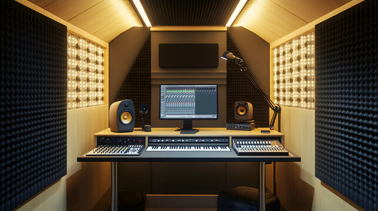
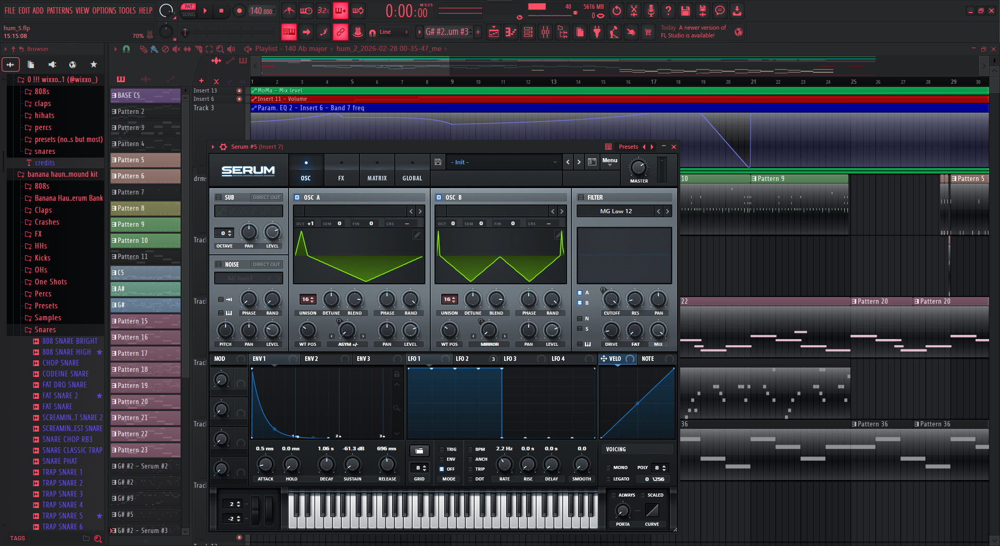
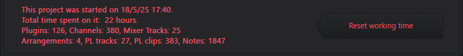
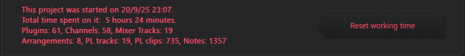
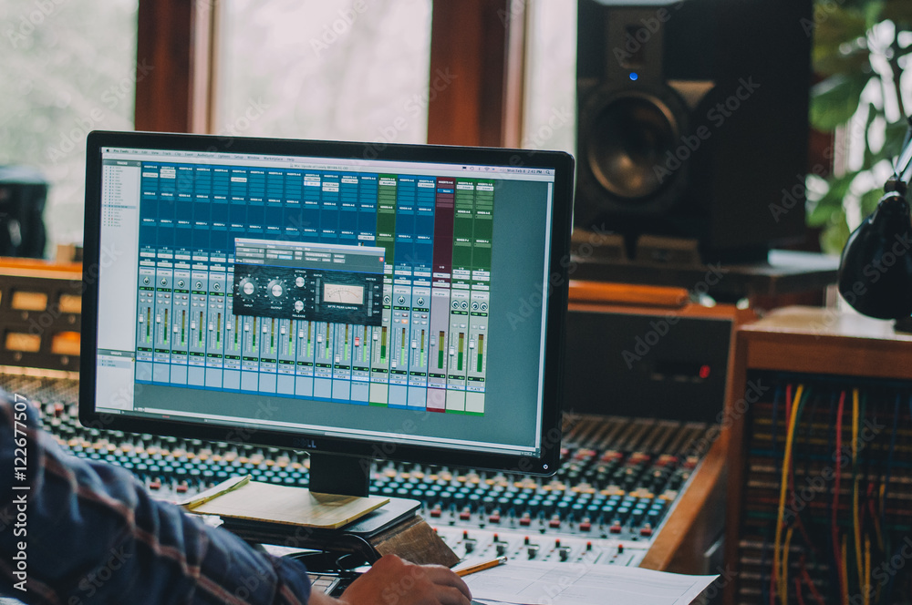
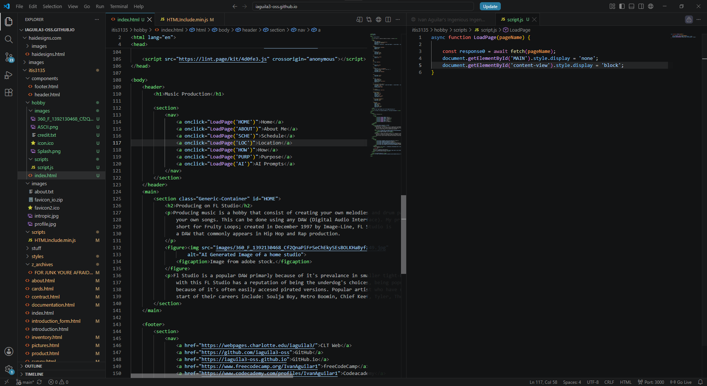
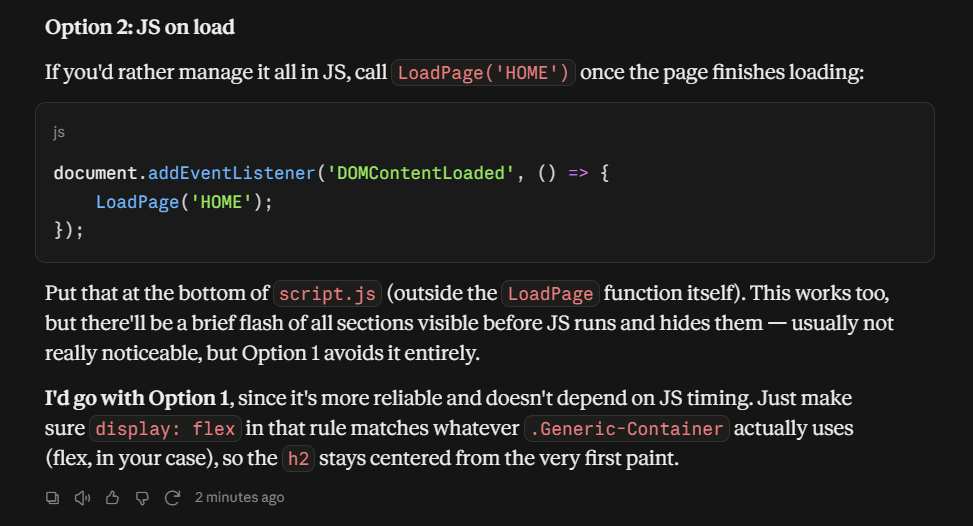

Producing on FL Studio
Producing music is a hobby that consists of creating your own melodies and drum patterns to put together your own songs. This can be done using any DAW (Digital Audio Interface). My primary DAW is FL Studio, short for Fruity Loops; created in December 1997 by Image-Line, FL Studio is a DAW that commonly appears in Hip Hop and Rap production.

Fl Studio is a popular DAW primarily because of its prevalence in smaller tight-knit communities. Along with this FL Studio has a reputation of being the underdog's choice, being popular among beginners because of its often easily accessed pirated versions. Popular artist who have used FL Studio at the start of their careers include: Soulja Boy, Metro Boomin, Chief Keef, Tyler, The Creator.
About Me
I first began my music production journey when I was 18 in 2023, I was really into underground music and felt a sort of relatability with artist that were gaining notoriety at the time. I enjoyed the songs and thought to myself, I can do this too. In the 3 years that have passed since that time I have put countless hours, evenings, days, and nights into growing my understanding with the art form and finding my own sound.

The following mp3 is the instrumental of the song I made in the image shown above!
Schedule
My production schedule can vary by a large amount depending on my mood that day, some days I feel like I'm capable of making something truly great, other days I feel as though I never should have started making music at all. Regardless I find my love for this craft so true that without fail I always find myself spending at least 30 minutes producing whenever I get on my desktop.

Songs could take 20 minutes to complete, or even 20 hours, it really depends in the moment, how you feel and how close the sound your making matches your vision. I like to make this joke: FL Studio is basically my computer's password, I can't do anything on it until I've attempted to make something in the DAW, only then can I use my computer for what I need to do.

The image above shows the project info for a track I finished the other month, compared to the first image, this one only took 5 hours!
Producing Locations
The primary location for my hobby tends to be my desktop computer at my apartment, but along with music production I have a real interest in traveling. Thanks to my laptop I am able to get work done no matter where I am, whether I'm in the car, on the subway, on a plane, or just at my friend's house, the location does not affect my ability to create.

One of my favorite things about this hobby is both the plethora of tools that help me make great music at home, along with the minimal tools required for me to work when I'm away. I primarily enjoy producing on my desktop computer, it has quality Monitors, an audio interface, a MIDI keyboard, and even a microphone setup. But I always understood that things like these aren't what make great music, it's all lies within. That's why I'm able to make great tracks on my laptop too, on wired earbuds and no mouse, using stock plugins and no autotune.
How to Produce
The first thing you need to get into Production is passion, a drive to create something greater than yourself. After you muster the courage to commit to it you can then continue by picking which DAW you want to initially learn. There are several that each have thier own pros and cons, and of course after you get the hang of one you can definitely use them all interchangeably.

After you have chosen your DAW and decided what makes you passionate you can use these two to start creating immediately. Initially, It's hard to get a grasp of if you have little familiarity with the technology or Music Theory, but thankfully there exist a vast ecosystem of tutorials online that teach you any kind of method you can think of. Videos exist that teach you how to make certain drum patterns, melodies, and even production styles, so you can imitate your favorite artist!
This is simply a short introduction on getting started with producing, but with that I will pass on the advice that helped me grow as a producer, told to me by my favorite producer: The best way to hone your abilities is by imitating those that inspire you. throughout the years I have done a lot of practice by recreating my own favorite songs, creating my own synths, drums, and even vocal mixes. This has allowed me to push my own boundaries and get a better understanding of the music I love.
Why Produce?
My main purpose with this hobby is not only to make great music, but also to leave something behind that I can be proud of. Coming back to the topic of inspiration I think of my favorite artist, and how their discographies cement their place in the cultural ecosystem. It drives me to feel the need to create something I can look back and say with confidence that I made my mark on this world.
I've traveled miles and miles to see some of my favorite artist perform and I have hope one day that I can give someone that same feeling I get when I see those people on stage performing my favorite songs.
***FLASHING LIGHT WARNING***
***FLASHING LIGHT WARNING***
AI Prompts used to create this page
The following section is designated to AI prompts used and what they added to my site.

"Help me finish this function, i want to make all the pages (sections) dissapear, then make the one it fetched appear"

"okay when i open the page fresh it has all of the sections displayed, can i make it so intially it only shows a certain one?"